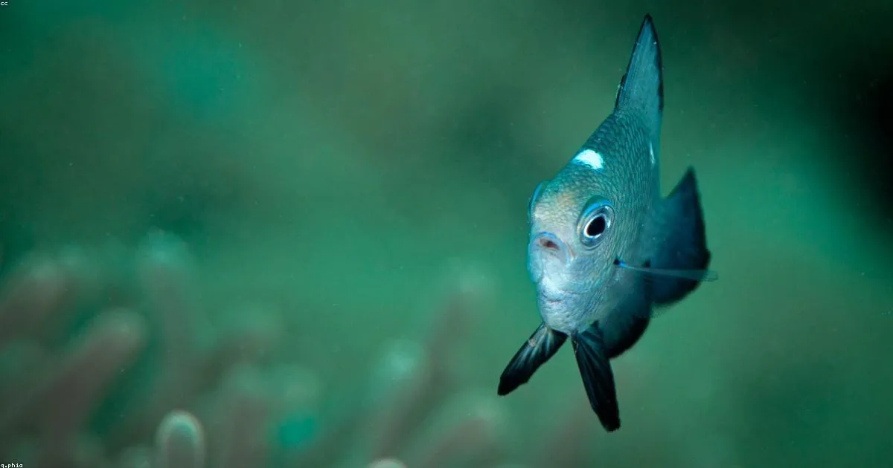

La fibra de vidrio es el material más usado en la construcción de embarcaciones modernas por una razón: es ligero, resistente y económico de fabricar. Pero no es indestructible. Después de meses o años en el agua del Caribe colombiano, los cascos de fibra acumulan golpes, grietas, decoloración y, en los casos más serios, osmosis. La buena noticia es que la fibra de vidrio es uno de los materiales más reparables que existen.
En este artículo explicamos todo lo que necesitas saber sobre reparación de fibra de vidrio en cascos de botes y yates: los tipos de daño más comunes, cómo evaluarlos, el proceso de reparación profesional y cuánto cuesta en Cartagena.
¿Por Qué Se Daña la Fibra de Vidrio?
La fibra de vidrio (también llamada GRP o FRP en inglés) es extremadamente resistente bajo condiciones normales. Sin embargo, en el ambiente marino del Caribe hay varios factores que aceleran el deterioro:
- Radiación UV intensa: El sol de Cartagena degrada el gelcoat (la capa exterior) con el tiempo, dejando la fibra expuesta a la humedad.
- Impactos y colisiones: Golpes contra muelles, rocas, boyas u otras embarcaciones producen desde pequeñas astillas hasta roturas estructurales.
- Osmosis: El agua penetra microscópicamente a través del gelcoat hacia el laminado, creando presión hidrostática y ampollas.
- Ciclos de expansión y contracción: Los cambios de temperatura diarios hacen que el material se expanda y contraiga, generando grietas por fatiga.
- Vibración de motores: En embarcaciones a motor, la vibración constante puede aflojar el laminado en zonas cercanas a los motores.
Los 5 Tipos de Daño Más Comunes en Cascos de Fibra
1. Astillas y Golpes Superficiales en el Gelcoat
Es el daño más frecuente y el más fácil de reparar. Afecta solo la capa exterior de gelcoat sin comprometer el laminado de fibra. Se identifica por cambios de color, bordes irregulares y una ligera depresión. Si el golpe no expone la fibra blanca por debajo, es una reparación cosmética.
Cuándo preocuparse: Si ves fibra blanca expuesta (como algodón) debajo del gelcoat, el daño es más profundo y hay riesgo de que el agua penetre al laminado.
2. Grietas en Estrella o "Spider Cracks"
Son grietas finas que parten de un punto central en forma de estrella. Generalmente son cosméticas (solo afectan el gelcoat) y son causadas por impacto o por flexión excesiva del casco. Sin embargo, si aparecen en zonas estructurales como la quilla o el espejo de popa, requieren evaluación técnica.
3. Delamination (Separación de Capas)
Ocurre cuando las capas del laminado de fibra se separan internamente. Se detecta golpeando el casco con los nudillos: un sonido hueco indica delamination. Es un daño estructural serio que requiere reparación profesional.
Señal de alerta: Si ves burbujas o ampollas en la superficie del casco por debajo de la línea de flotación, combinadas con sonido hueco al golpear, es probable que tengas delamination asociada a osmosis.
4. Osmosis (Ampollas Hidrolíticas)
La osmosis es el daño más temido en cascos de fibra. Ocurre cuando el agua penetra el gelcoat y reacciona con las resinas del laminado, creando ácidos que forman presión y ampollas. Es más común en embarcaciones que permanecen en el agua permanentemente, como los que están siempre fondeados en Cartagena.
Las ampollas son visibles bajo la línea de flotación cuando se saca la embarcación del agua. El liquido interno tiene un olor agrio característico. Si se ignora, la osmosis puede comprometer la integridad estructural del casco en años.
5. Roturas Estructurales
Resultado de impactos severos, encalladuras o colisiones. Requieren laminado nuevo con resina epoxi o poliéster, dependiendo del material original. Son las reparaciones más complejas y costosas, pero la fibra de vidrio admite reparaciones prácticamente invisibles cuando se hace correctamente.
El Proceso de Reparación Profesional Paso a Paso
Paso 1: Evaluación del Daño
Antes de cualquier reparación, un técnico evalúa el alcance real del daño mediante inspección visual, percusión (golpear el casco para detectar áreas huecas) y, en casos de osmosis, medición de la humedad del laminado con un higrómetro digital. Esta evaluación determina si el daño es solo cosmético o estructural.
Paso 2: Preparación de la Superficie
Se retira todo el material dañado con amoladora, dremel o herramientas de corte. Para osmosis, se abren todas las ampollas y se extrae el líquido. La zona se prepara con bordes en V o biselados de 8:1 (8 milímetros de laminado por cada milímetro de espesor) para asegurar máxima adhesión del material nuevo.
Paso 3: Laminado de Reparación
Se aplican capas alternadas de manta de vidrio y resina hasta igualar el espesor original del casco. Se trabaja en capas delgadas para evitar acumulación de calor durante el curado. Para embarcaciones que estarán bajo la línea de flotación, se prefiere la resina vinilester o epoxi sobre la poliéster estándar, por su mayor resistencia a la permeación del agua.
Paso 4: Igualación y Gelcoat de Acabado
Una vez curada la reparación, se lija progresivamente desde grano 80 hasta 400 para lograr una superficie pareja. Luego se aplica gelcoat de color, fabricado a medida igualando el color original de la embarcación. Finalmente, se pule y abrillanta para integrar la reparación al resto del casco.
Resultado esperado: Una reparación bien ejecutada es prácticamente invisible. El color puede necesitar tiempo para igualar por exposición solar diferenciada, pero la calidad estructural es total.
¿Cuánto Cuesta Reparar Fibra de Vidrio en Cartagena?
Los costos varían enormemente según el tipo y extensión del daño:
- Golpes y astillas pequeñas (hasta 10 cm): $80.000 – $250.000 COP por golpe
- Spider cracks superficiales: $200.000 – $500.000 COP según área afectada
- Delamination localizada: $500.000 – $2.000.000 COP según tamaño
- Tratamiento de osmosis: Variable según extensión. Puede requerir varar la embarcación por 6-12 semanas para secado completo del laminado
- Roturas estructurales: Cotización específica según el daño
Lo más importante: una reparación temprana siempre cuesta menos que dejar que el daño avance. Un golpe ignorado hoy puede convertirse en osmosis en dos temporadas.
¿Cuándo Llamar a un Profesional?
Puedes hacer reparaciones menores de gelcoat tú mismo si tienes experiencia. Pero en estos casos es imprescindible la intervención profesional:
- Cuando la fibra blanca está expuesta al agua
- Cualquier daño bajo la línea de flotación
- Ampollas de osmosis
- Sonido hueco al golpear el casco
- Grietas que han pasado a través de todo el espesor del casco
- Reparaciones en zonas estructurales (quilla, fondos, espejo de popa)
Prevención: El Mejor Mantenimiento
En el ambiente marino de Cartagena, la mejor estrategia es la prevención. Algunas recomendaciones clave:
- Aplicar pintura antifouling cada 12-18 meses protege el casco de la osmosis además del fouling
- Un PPF (film de protección) en zonas críticas previene golpes y arañazos
- Inspecciona el casco cada vez que varas la embarcación — es más fácil detectar daños cuando están secos
- No ignores cambios de color en el gelcoat: amarillamiento o manchas cafés bajo la línea de flotación son señales tempranas de osmosis
¿Tienes Daños en el Casco?
Evaluamos el estado de tu embarcación sin costo. Reparamos golpes, grietas, osmosis y delamination con garantía de acabado.
Cotizar Reparación Gratis